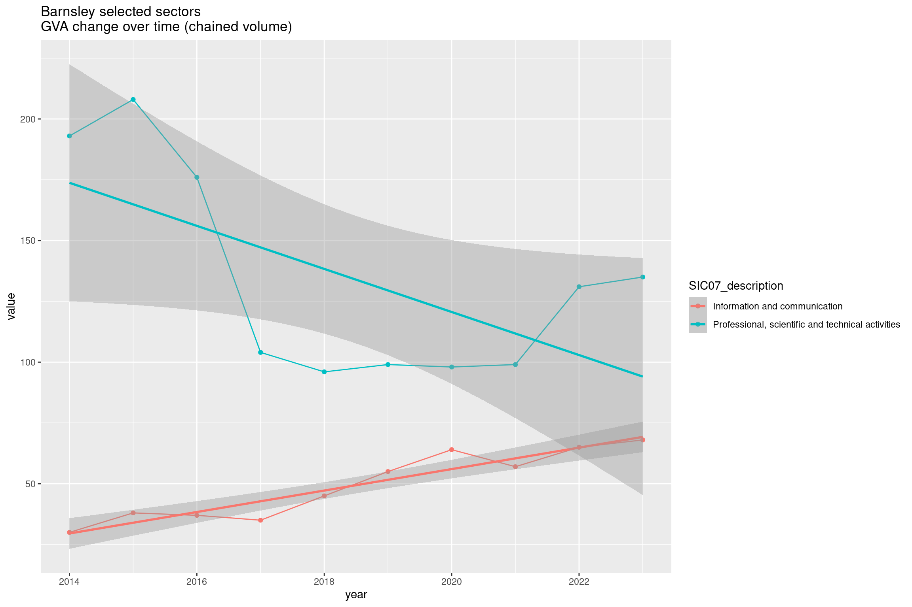
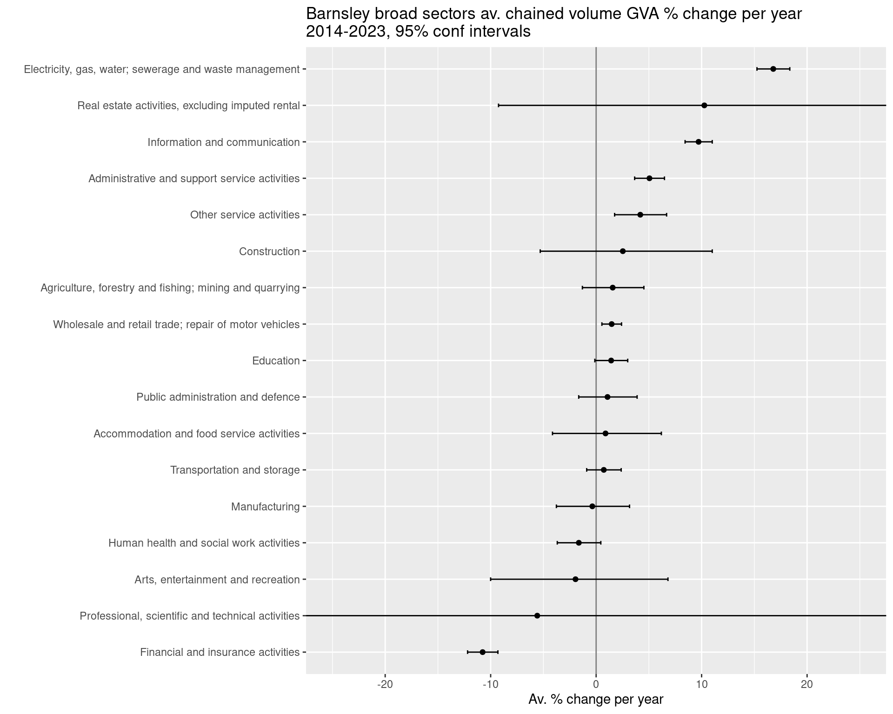
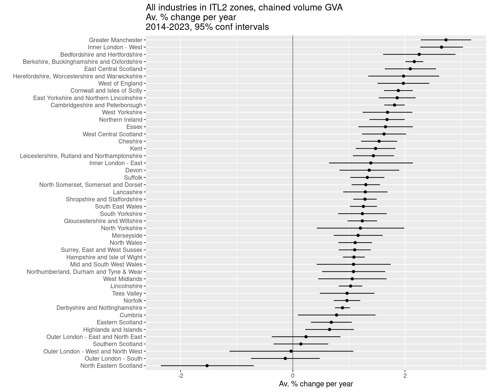
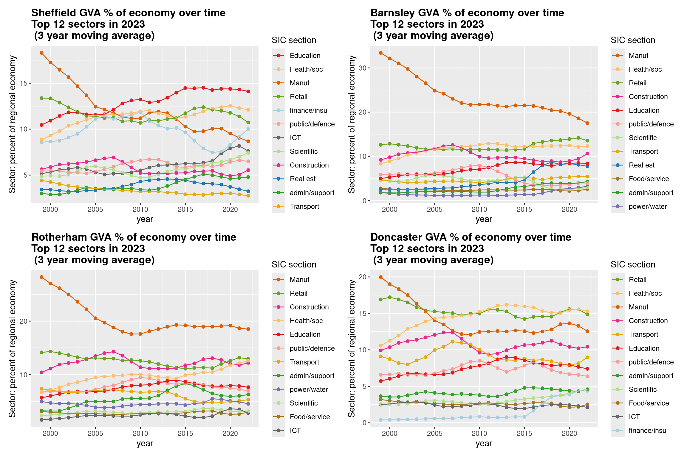

2+2[1] 4sqrt(64)[1] 8bit.ly/rtasterslides into your browser address bar.bit.ly/rtasterslides )bit.ly/positlogin into the address bar) to create an account at posit.cloud, using the ‘sign up’ box. It’ll ask you to check your email for a verification link so do that before proceeding.
Also last chance to open own slide copy! Get them at bit.ly/rtasterslides.
RStudio is where you’ll be doing all the R loveliness.
Before looking at RStudio, let’s make a new R script, where we’ll do the coding.

After that new file’s been made, RStudio should look something like the pic below.

The console is bottom left: all R commands end up being run here. You either run code directly in the console or send code from your R script.
All code blocks here have a little clipboard symbol if you hover over them to quickly copy so you can paste it all into RStudio. This will come in especially handy with larger code blocks later…
2+2[1] 4sqrt(64)[1] 8We can assign all manner of things a name to then use them elsewhere: values, strings, lists - and, crucially, data objects like all the UK’s regional GVA. But these all use the same method.
We’ll now stick some code into that newly created R script we made earlier in the top left of RStudio.
All code will run in the console - what we do with scripts is just send our written/saved code to the console.
Let’s test this by adding code to load the tidyverse library.
It’s a basket of tools that have become part of the R language - they all fit together to make consistent workflows much easier.
The online book R for Data Science is a great source to learn it, by the person who started it.
We’ll be copy/pasted separate code chunks as we go to talk through what they do. But if you’d rather bulk-copy the session’s code and run through it as you see fit, copy here with the clipboard symbol then paste into the new R script.
#WHOLE SCRIPT FOR THE SESSION
library(tidyverse)
#Load some functions and two libraries (and install those libraries if they're not already present)
x = Sys.time()
source('https://bit.ly/rtasterfunctions')
Sys.time() - x
# LOAD ITL3 GVA DATA----
#ITL3 zones, SIC sections, current prices, 2023 latest data (minus imputed rent)
df = read_csv('https://bit.ly/rtasteritl3noir')
#This one has imputed rent included if you want it
# df = read_csv('https://bit.ly/rtasteritl3')
unique(df$SIC07_description)
# unique(df$Region_name)[order(unique(df$Region_name))]
df %>%
filter(year == max(year)) %>%
group_by(SIC07_description) %>%
summarise(
median_gva = median(value),
min_gva = min(value),
max_gva = max(value)
) %>%
arrange(-median_gva)
#Boooo, nested brackets...
sqrt(log10(10000))
#Wooo! Lovely piped functions!
10000 %>% sqrt %>% log10
# LOCATION QUOTIENTS/PROPORTIONS----
add_location_quotient_and_proportions(
df %>% filter(year == max(year)),
regionvar = Region_name,
lq_var = SIC07_description,
valuevar = value
) %>% glimpse
#Finding location quotients for each year in the data
#And then overwriting the df variable with the result
df = df %>%
group_split(year) %>%
map(add_location_quotient_and_proportions,
regionvar = Region_name,
lq_var = SIC07_description,
valuevar = value) %>%
bind_rows()
#View a single place...
df %>% filter(
qg('rotherham',Region_name),
year == max(year)#get latest year in data
) %>%
mutate(regional_percent = sector_regional_proportion *100) %>%
select(SIC07_description,regional_percent, LQ) %>%
arrange(-LQ)
# PLOT STRUCTURAL CHANGE OVER TIME IN ITL3 ZONE----
#Processing before plot
#1. Set window for rolling average: 3 years
smoothband = 3
#2. Make new column with rolling average in (applying to all places and sectors)
#Years are already in the right order, so will roll apply across those correctly
df = df %>%
group_by(Region_name,SIC07_description) %>%
mutate(
sector_regional_prop_movingav = rollapply(
sector_regional_proportion,smoothband,mean,align='center',fill=NA
)
) %>%
ungroup()
#3. Pick out the name of the place / ITl3 zone to look at
#We only need a bit of the name...
place = getdistinct('doncas',df$Region_name)
#Check we found the single place we wanted (some search terms will pick up none or more than one)
place
# top 12 sectors in latest year
top12sectors = df %>%
filter(
Region_name == place,
year == max(year) - 1#to get 3 year moving average value
) %>%
arrange(-sector_regional_prop_movingav) %>%
slice_head(n= 12) %>%
select(SIC07_description) %>%
pull()
#Plot!
ggplot(df %>%
filter(
Region_name == place,
SIC07_description %in% top12sectors,
!is.na(sector_regional_prop_movingav)#Remove NAs created by 3 year moving average
),
aes(x = year, y = sector_regional_prop_movingav * 100, colour =
fct_reorder(SIC07_description,-sector_regional_prop_movingav) )) +
geom_point() +
geom_line() +
scale_color_brewer(palette = 'Paired', direction = 1) +
ylab('Sector: percent of regional economy') +
labs(colour = paste0('Largest 12 sectors in ',max(df$year))) +
ggtitle(paste0(place, ' GVA % of economy over time (', smoothband,' year moving average)'))
# CHAINED VOLUME ITL3 DATA----
df.cv = read_csv('https://bit.ly/rtasteritl3cvnoir')
#Get the text for an ITL3 zone by searching for a bit of the name
place = getdistinct('barns',df$Region_name)
#Check we got just one place!
place
#If needed, code to list all ITL3 place names again
#unique(df.cv$Region_name)
startyear = 2014
endyear = 2023
#Pick out single slopes to illustrate
ggplot(
df.cv %>% filter(
year %in% startyear:endyear,
Region_name == place,
qg('information|professional', SIC07_description)
),
aes(x = year, y = value, colour = SIC07_description)
) +
geom_line() +
geom_point() +
geom_smooth(method = 'lm') +
ggtitle(paste0(place, ' selected sectors\nGVA change over time (chained volume)'))
#Get all slopes for sectors in that place
slopes = get_slope_and_se_safely(
df.cv %>% filter(
year %in% startyear:endyear,
Region_name == place,
!qg('households', SIC07_description)
),
SIC07_description,
y = log(value),
x = year,
neweywest = T)
#Add 95% confidence intervals around the slope
slopes = slopes %>%
mutate(
ci95min = slope - (se * 1.96),
ci95max = slope + (se * 1.96)
)
#Adjust to get percentage change per year from log slopes
slopes = slopes %>%
mutate(across(c(slope,ci95min,ci95max), ~(exp(.) - 1) * 100, .names = '{.col}_percentperyear'))
#Plot the slope with those confidence intervals
ggplot(slopes, aes(x = slope_percentperyear, y = fct_reorder(SIC07_description,slope))) +
geom_point() +
geom_errorbar(aes(xmin = ci95min_percentperyear, xmax = ci95max_percentperyear), width = 0.1) +
geom_vline(xintercept = 0, colour = 'black', alpha = 0.5) +
coord_cartesian(xlim = c(-25,25)) +
xlab('Av. % change per year') +
ylab("") +
ggtitle(paste0(place, ' broad sectors av. chained volume GVA % change per year\n',startyear,'-',endyear,', 95% conf intervals'))
# EXAMPLE OF GETTING DATA DIRECTLY (GET NATIONAL SIC SECTION DATA)----
#Check readxl is already installed, install if not.
if(!require(readxl)){
install.packages("readxl")
library(readxl)
}
#2025:
url1 <- 'https://www.ons.gov.uk/file?uri=/economy/grossvalueaddedgva/datasets/nominalandrealregionalgrossvalueaddedbalancedbyindustry/current/regionalgrossvalueaddedbalancedbyindustryandallinternationalterritoriallevelsitlregions.xlsx'
p1f <- tempfile(fileext=".xlsx")
download.file(url1, p1f, mode="wb")
itl2.all <- read_excel(path = p1f,range = "Table 2a!A2:AD4556")
names(itl2.all) <- gsub(x = names(itl2.all), pattern = ' ', replacement = '_')
itl2.all = itl2.all %>%
filter(SIC07_description == 'All industries') %>%
pivot_longer(`1998`:names(itl2.all)[length(names(itl2.all))], names_to = 'year', values_to = 'value') %>% #get most recent year
mutate(year = as.numeric(year))
startyear = 2011
endyear = 2023
#Get all slopes for sectors in that place
slopes = get_slope_and_se_safely(
itl2.all %>% filter(year %in% c(startyear:endyear)),
Region_name,
y = log(value),
x = year,
neweywest = T)
#Add 95% confidence intervals around the slope
slopes = slopes %>%
mutate(
ci95min = slope - (se * 1.96),
ci95max = slope + (se * 1.96)
)
#Adjust to get percentage change per year from log slopes
slopes = slopes %>%
mutate(across(c(slope,ci95min,ci95max), ~(exp(.) - 1) * 100, .names = '{.col}_percentperyear'))
#Plot the slope with those confidence intervals
ggplot(slopes, aes(x = slope_percentperyear, y = fct_reorder(Region_name,slope))) +
geom_point() +
geom_errorbar(aes(xmin = ci95min_percentperyear, xmax = ci95max_percentperyear), width = 0.1) +
geom_vline(xintercept = 0, colour = 'black', alpha = 0.5) +
xlab('Av. % change per year') +
ylab("") +
ggtitle('All industries in ITL2 zones, chained volume GVA\nAv. % change per year\n2014-2023, 95% conf intervals')
n <- length(unique(df$SIC07_description))
set.seed(12)
qual_col_pals = RColorBrewer::brewer.pal.info[RColorBrewer::brewer.pal.info$category == 'qual',]
col_vector = unlist(mapply(RColorBrewer::brewer.pal, qual_col_pals$maxcolors, rownames(qual_col_pals)))
randomcols <- col_vector[10:(10+(n-1))]
#Do once!
getplot <- function(place){
df = df %>%
filter(!qg("Activities of households|agri",SIC07_description)) %>%
mutate(
SIC07_description = case_when(
grepl('defence',SIC07_description,ignore.case = T) ~ 'public/defence',
grepl('support',SIC07_description,ignore.case = T) ~ 'admin/support',
grepl('financ',SIC07_description,ignore.case = T) ~ 'finance/insu',
grepl('agri',SIC07_description,ignore.case = T) ~ 'Agri/mining',
grepl('electr',SIC07_description,ignore.case = T) ~ 'power/water',
grepl('information',SIC07_description,ignore.case = T) ~ 'ICT',
grepl('manuf',SIC07_description,ignore.case = T) ~ 'Manuf',
grepl('other',SIC07_description,ignore.case = T) ~ 'other',
grepl('scientific',SIC07_description,ignore.case = T) ~ 'Scientific',
grepl('real estate',SIC07_description,ignore.case = T) ~ 'Real est',
grepl('transport',SIC07_description,ignore.case = T) ~ 'Transport',
grepl('entertainment',SIC07_description,ignore.case = T) ~ 'Entertainment',
grepl('human health',SIC07_description,ignore.case = T) ~ 'Health/soc',
grepl('food service activities',SIC07_description,ignore.case = T) ~ 'Food/service',
grepl('wholesale',SIC07_description,ignore.case = T) ~ 'Retail',
.default = SIC07_description
)
)
top12sectors = df %>%
filter(
Region_name == place,
year == max(year) - 1#to get 3 year moving average value
) %>%
arrange(-sector_regional_prop_movingav) %>%
slice_head(n= 12) %>%
select(SIC07_description) %>%
pull()
ggplot(df %>%
filter(
Region_name == place,
SIC07_description %in% top12sectors,
!is.na(sector_regional_prop_movingav)#Remove NAs created by 3 year moving average
),
aes(x = year, y = sector_regional_prop_movingav * 100, colour = fct_reorder(SIC07_description,-sector_regional_prop_movingav) )) +
geom_point() +
geom_line() +
scale_color_manual(values = setNames(randomcols,unique(df$SIC07_description))) +#set manual pastel colours matching sector name
ylab('Sector: percent of regional economy') +
theme(plot.title = element_text(face = 'bold')) +
labs(colour = 'SIC section') +
# scale_y_log10() +
ggtitle(paste0(place, ' GVA % of economy over time\nTop 12 sectors in ',max(df$year),'\n (', smoothband,' year moving average)'))
}
places = getdistinct('doncas|roth|barns|sheff',df$Region_name)
plots <- map(places, getplot)
patchwork::wrap_plots(plots)Type or paste the following text at the top of the newly opened R script in the top left panel.
library(tidyverse)When you’ve put that in, the script title will go red, showing it can now be saved (it should look something like the image below).

If all is well, you should see the text below in the console - the tidyverse library is now loaded. Huzzah!

Just one more thing first before actual economic data, sorry. We’re just going to load some functions (and install a couple of libraries) that we’ll need.
If of interest, code for these functions are on the github site here.
** Now we can load some regional GVA data!**

This is from the latest ONS “Regional gross value added (balanced) by industry: all International Territorial Level (ITL) regions” (The Excel file is available here). Released April 2025, it’s got data up to 2023. It has:
Plus…
Let’s start looking at the data in R…
“R is brilliant” exhibit A: we can use it to automate/repeat tedious things.
Here’s a sample of what the data looks like in the original Excel file. Different SIC sector levels are nested, there’s one column per year (in R, we’ve made year a single ‘tidy’ column)

df object comes from that ONS Excel sheettidyverse to do this - we’ll group by sector for the latest year to see its median and range
Here’s the principle with a silly toy example using two functions. Dead simple here, but with larger processing chains it quickly becomes indispensible. It’ll crop up a lot as we go.1

Once the code from the next slide is in RStudio, if you CTRL + mouse click on the function name, it’ll take you to the code (if you loaded them above). You’ll see it’s a not-too-elaborate piping operation of the type we were just looking at.
The power of functions is in packaging this kind of ‘need often’ task into flexible, reusable form.
In the next code block we’re running the same code but doing four extra things that we chain together:
group_split the data into years (one separate dataframe per year)map each year bundle into the add_location_quotient_and_proportions functionbind_rows it all back togetherdf with the result (first line) so we’ve kept it (rather than, in the last example, just outputting to the console).Now let’s do something with result:
rotherh to find Rotherham.Output from that code…
# A tibble: 18 × 3
SIC07_description regional_percent LQ
<chr> <dbl> <dbl>
1 Manufacturing 18.8 1.84
2 Construction 12.7 1.81
3 Activities of households 0.139 1.40
4 Transportation and storage 5.28 1.38
5 Human health and social work activities 12.8 1.38
6 Electricity, gas, water; sewerage and waste manageme… 3.89 1.34
7 Public administration and defence 6.74 1.21
8 Wholesale and retail trade; repair of motor vehicles 13.2 1.19
9 Administrative and support service activities 6.47 1.10
10 Education 7.24 1.05
11 Accommodation and food service activities 3.25 1.03
12 Agriculture, forestry and fishing; mining and quarry… 0.694 0.758
13 Other service activities 1.33 0.733
14 Arts, entertainment and recreation 0.774 0.502
15 Professional, scientific and technical activities 3.09 0.333
16 Information and communication 2.20 0.333
17 Financial and insurance activities 1.21 0.123
18 Real estate activities, excluding imputed rental 0.159 0.0398There are a bunch of excellent cheat sheet documents available for many of R’s features. You can easily access them via RStudio’s help menu.
The data tranformation with dplyr sheet covers a lot of the functions we’re using in piping operations.
There’s also an excellent ggplot cheatsheet, among many others. We’ll come back to this one…
Let’s plot some of the data. We’ll look at how an ITL3 zone’s broad sectors have changed their proportion over time, to see how those economies have changed structurally.
We’ll do this in 3 stages:
ggplot, the package we’ll be using to visualise data - but it’s worth mentioning that its principles are actually clear and consistent.aes argument - that’s short for aesthetics. An aesthetic is any single distinct plot element - like the x or y axis, colour, shape, size etc.Resulting plot is on on next slide –>

Current prices are great and everything - loads of value being able to examine relative change, and things actually adding up. But they’re not real prices2, so can’t be used to understand real growth over time.
For this, we have to use chained volume data that adjusts for inflation…
So next we load data for the same sectors and ITL3 zones, but it’s chained volume GVA figures, inflation-adjusted to 2022 money value.
We’ll then pick out a single place to examine. You can use a small part of a local authority / place name to return the full name that we’ll use to filter the data.
We’ll check it’s returned what you want though. For example, glouc will return a couple of different places with ‘Gloucester’ in.
Now we’ll examine sector growth trends, looking at average growth over time. To start with, let’s pick out a couple of sectors for our chosen place.

Next, we’re going to find linear trends for every sector in our chosen place and compare them, including some confidence intervals. To do this we’ll:
Plot in next slide –>

Let’s actually run through extracting data from an online Excel sheet. It’s not too much work. We’ll use it to look at growth rates for the entire economies of mayoral authorities and other ITL2 zones.
We use the readxl package - this is already installed in posit.cloud RStudio. If you’re working in RStudio on your own machine, here’s some code to check if you have it installed and install it if not.
Then onto getting the data directly and processing it…
Now we have the data in the itl.all object in the form we want, we’ll do as we did above for sectors in one place - find linear slopes for each ITL2 zone and some confidence intervals.
Finally, we plot the slopes to show average percent change over time…


R geek footnote: magrittr pipe not native pipe because only one shortcut in RStudio + magrittr pipe more versatile.↩︎
Though Diane Coyle quotes Schelling 1958: “What we call ‘real’ magnitudes are not completely real; only the money magnitudes are real. The ‘real’ ones are hypothetical.” Coyle 2025 p.178↩︎